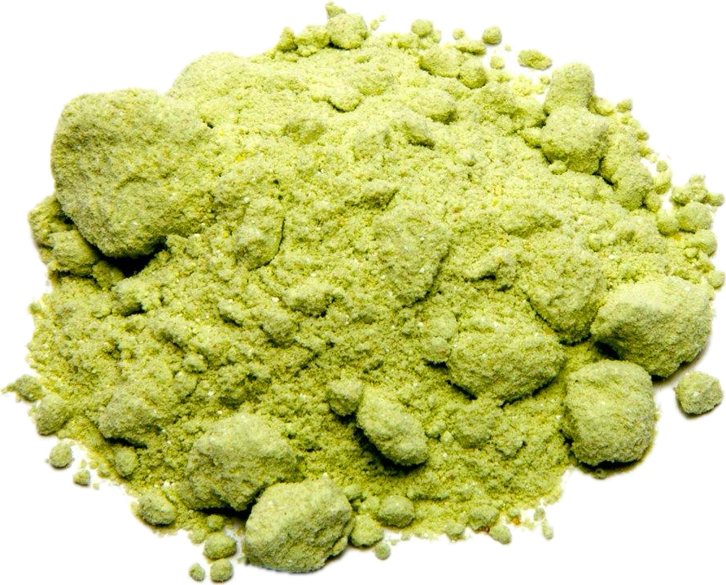

Wasabia japonica
Overview
Wasabi is a plant in the Brassicaceae family, native to Japan and parts of China and Korea. It produces a pungent green paste from its rhizomes, which is commonly used as a condiment with sushi and sashimi. Wasabi has a strong, spicy flavor and aroma, similar to horseradish.
Cultural Overlap
Wasabi is a staple condiment in Japanese cuisine, where it is served with sushi, sashimi, and other seafood dishes. It is also used to flavor noodle dishes, sauces, and snacks. Wasabi has cultural significance in Japanese culinary traditions and rituals, where it is prized for its unique flavor and symbolic meanings.